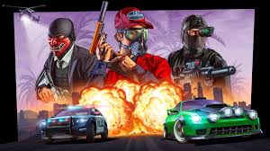
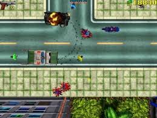
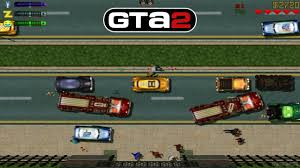
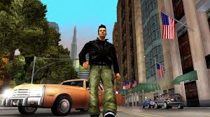
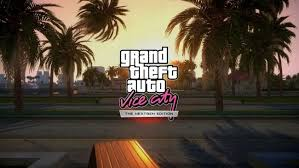
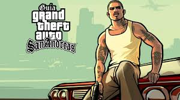
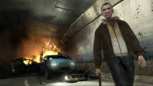
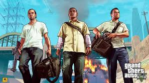

La seva Historia
Història de la saga Grand Theft Auto
·Grand Theft Auto és una de les sagues més icòniques del món dels videojocs. Cada entrega ens mostra un nou protagonista, en una nova ciutat, amb una nova lluita per sobreviure, pujar al poder o escapar del passat.

·GTA (1997) El primer joc ens posa a la pell d’un criminal anònim que treballa per diferents bandes en tres ciutats fictícies.
·GTA 2 (1999) Amb un toc futurista, aquest joc ens presenta Claude Speed, un criminal en una ciutat anomenada Anywhere City. És el primer GTA que comença a suggerir una narrativa més definida i un protagonista reconegut.
·GTA III (2001) Aquí comença la revolució. En 3D i amb una història cinematogràfica, ens situem a Liberty City. El protagonista, Claude, és traït per la seva parella i busca venjança mentre treballa per la màfia. Va canviar per sempre el món dels videojocs.
·GTA: Vice City (2002) Ens traslladem als anys 80, a la brillant i corrupta Vice City (inspirada en Miami). El protagonista, Tommy Vercetti, surt de la presó i és enviat per recuperar una entrega de drogues que surt malament. Decideix quedar-se i construir el seu propi imperi.
·GTA: San Andreas (2004) Un dels jocs més ambiciosos. Carl "CJ" Johnson torna a casa després de la mort de la seva mare. Es retroba amb la seva banda, Grove Street, i es veu embolicat en una guerra de territoris, corrupció policial i traïcions.
·GTA IV (2008) Niko Bellic, un immigrant de l’Europa de l’Est, arriba a Liberty City buscant el somni americà... però es troba amb deutes, bandes i un passat que el persegueix. És el GTA més seriós i realista.
· GTA V (2013) Per primer cop, tres protagonistes: Michael, un exlladre retirat; Franklin, un jove dels suburbis que vol sortir del carrer; Trevor, un criminal imprevisible i violent.